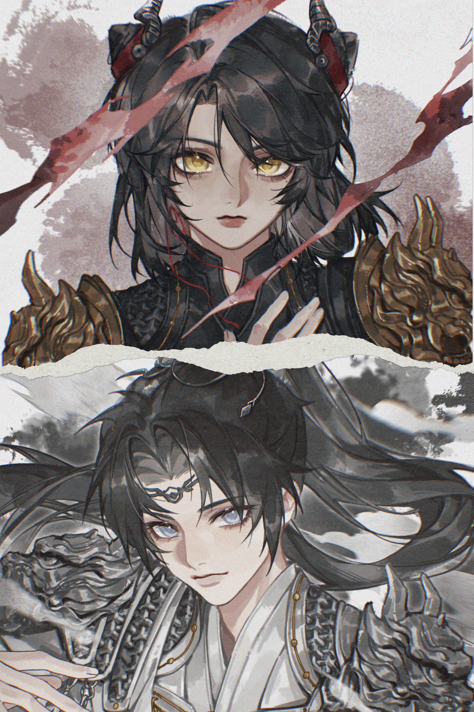
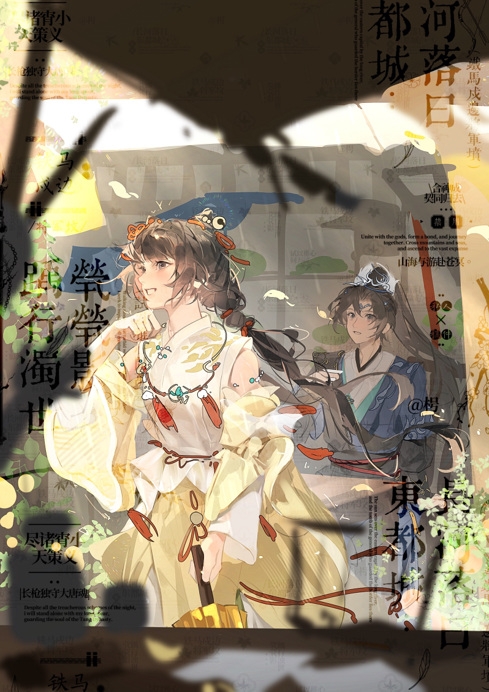
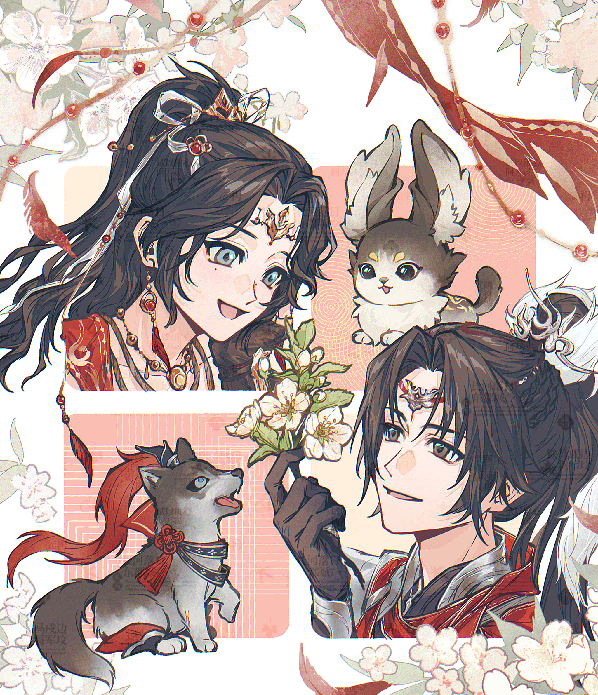
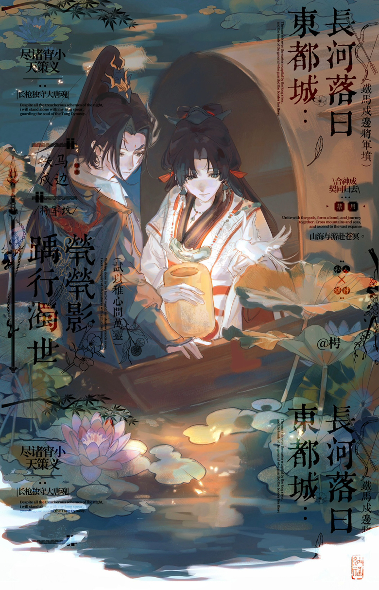
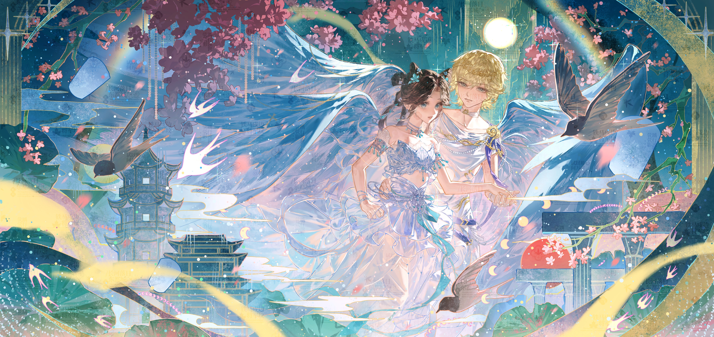
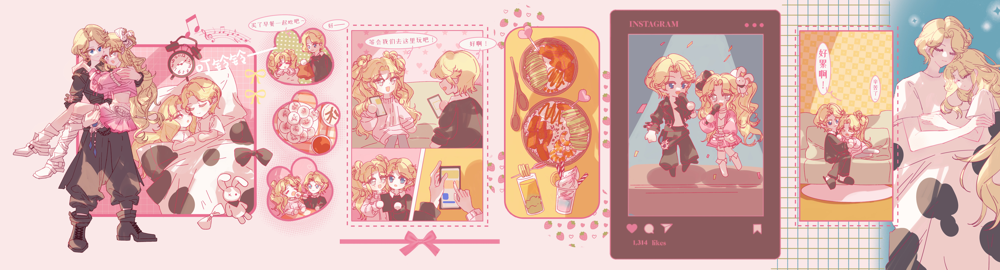
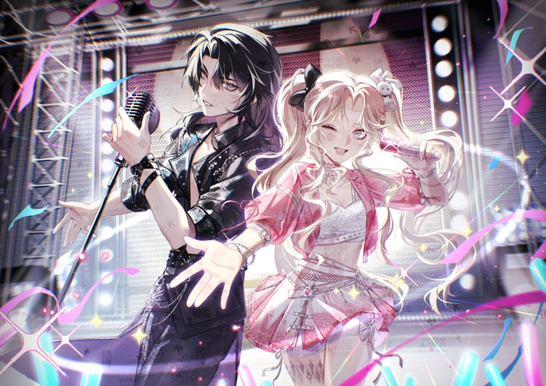
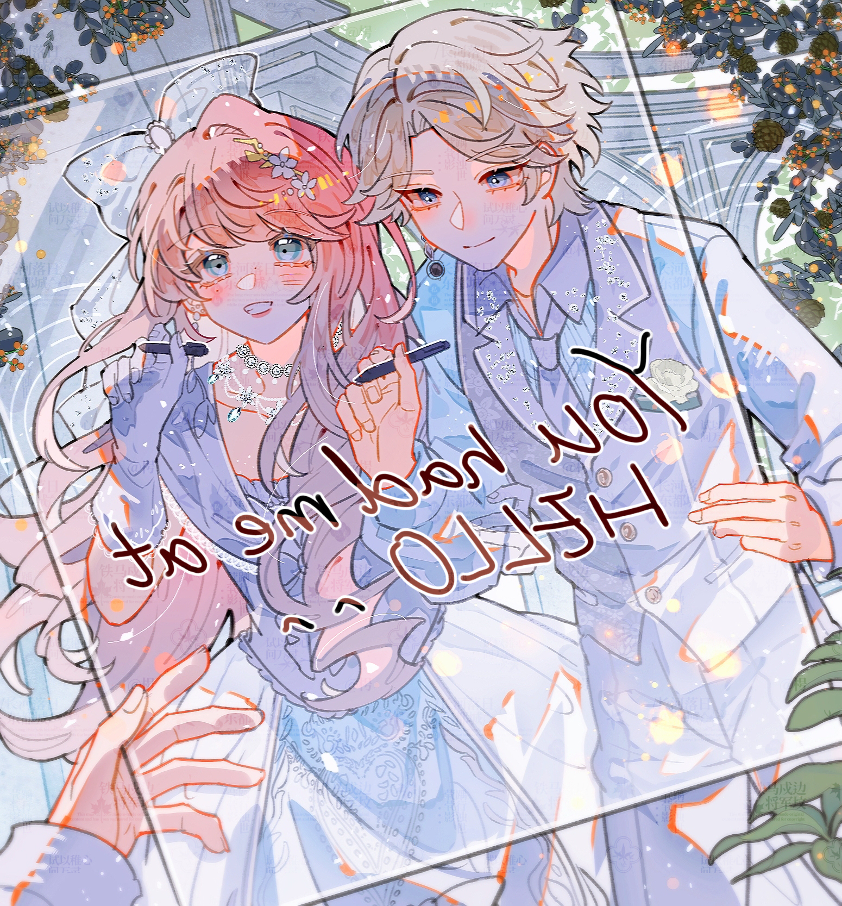

✦这是Jiu&Xiao的世界，欢迎你的到来
点击右侧的标签，查看各AU故事。
希望你喜欢他们的故事。
✦ 背景介绍 ✦
✦ 服设图鉴 ✦
按标签筛选 ➜
【主世界】江湖初见
古风原作向
天策府是大唐统管江湖事务的部队，府中弟子穿铠甲执长枪，骑马作战，令行禁止。他的日常工作是巡视洛阳城及周边地带。
万灵山庄坐落岭南，别称兽王庄，其弟子擅弓箭，可与百兽对话，与乘黄缔结灵契并肩作战。她下山游历至洛阳时，被这城市的繁华留下暂居。
他们在这座城市相遇，他带她看尘世间的烟火，她带他走进洒脱自由的江湖。
背景故事 片段01
例行巡逻至西街，这里的小商贩较多，常惹口角，真论起道理来多半双方都占点理只是不肯退让。今日也是这般情景，两小贩本还是站在街两边吵嘴，话赶话的火气窜上来直在路中间动起手来。
他听见前面喧哗声和围观的人群，赶紧冲进去阻拦，可那两小贩扯着他的袖子一口一句官爷评评理。他不好跟普通人动手，只能尽力调节，可小贩看他年轻，并未听进去他的话，局面反而更是混乱。
酒楼二楼的少女趴在栏杆上饶有兴致地瞧着底下的闹剧，她在山庄里也不是没遇到过相似的情景，熊守卫不小心坐塌了锦鸡车夫的新拖车，小刺猬的仓库不知道被谁掏了个空，这种小打小闹还不至于庄主出面，就全交给了她们这些弟子处理。那时可把她折腾的一脑袋官司，现在倒有些触景生情了。
底下那小军爷终于安抚好了人，围观的人群散去，他禁不住长叹一口气，扶了扶偏歪的发冠。少女忍不住笑出声，引得他抬头看去。
背景故事 片段02
今日是休沐日，他本想上街随意走走，不留神又走上了平日巡逻的路线，不过虽是午时却天色渐阴，恐怕要下雨，路上行人也少了许多。
随意找了个茶摊坐下歇歇脚，没喝上一盏茶，大雨倾盆而下，他便想着等雨势缓些再走。路上行人或是迎着雨赶回家，或是在街边铺子下避雨，也有到这茶摊里来的。湿了衣服或是被碍了事的难免面上带上几份愁绪。
这时远远跑来一个身影，嘴里还喊着哥哥姐姐叔叔婶婶给腾个地儿，便往篷下一钻。是那个少女，他们有过一面之缘，她倒还是一副笑吟吟的模样。
有认识她的人和她招呼，她边抹把脸上的雨水，草草弹着衣服上的水珠，一边应和着旁人的话。她声量不小，一时间小小茶摊里数她的俏皮话最是明显。他没掺和那处的热闹，只看着她顽听见她笑。
雨渐小了，一抹明媚的阳光穿过层云，午后许是个好天气。
背景故事 片段03
上月起城中祸事频发，忙碌了好些日子查问了好些人总算有了些进展，他领了任务拿着几幅画像重回案发地附近想再找找证人。街坊走遍了也没获得什么新线索，有点丧气时听见巷子深处传来窸窸窣窣的声音，他放轻脚步慢慢走过去。
就见几只流浪狗围着一个少女，她挎着个鼓鼓囊囊的布袋子，手里动作着把包子撕开，边说“我身上可没什么银子了，你们还挑上口味了，凑合着吃吧”，其中一只黑色大狗呜汪了几声，蹭蹭她的手，少女又说到“好啦不许撒娇，大黄都和我说了，你们昨日去讨食结果被赶出来，是你推着它才挨了一棍子。今日你的份得分大黄一半。”
他本想走近这下又迟疑了，这场面明摆着少女在和狗对话，这实在是难以想象。有只悠哉趴在一旁的大狗发现了他，起身朝他哈气，少女回头瞧见他却眼睛一亮“小军爷！你来说说，我这分法有没有道理”，大狗呜呜的声音和少女的叽叽喳喳混在一起，他脑子有些乱，又忍不住想笑。
把这包子的事解决了，他终于问出口“你能和动物说话？”瞧着女孩脸上的疑惑，他叹口气叮嘱“这世上能与动物说话的人是极少数，你莫要在旁人面前暴露了你的能力。”少女这才惊讶道“我们山庄里的人都是这样的。我知道啦，谢谢你！”
惊讶过后她又恢复了笑眼咪咪的样子，絮絮叨叨说起遇到这群大狗的事来，闲扯了一阵，她问起他怎么会绕来这边的小巷，于是他也同她说了尚未抓捕的几个凶徒。本意是让她小心提防些，没想到她先抢了话头“走，我带你去问问！”
接下来的一个时辰，他们先去找了那群流浪狗，又翻上墙去堵炸毛的野猫，更没拦住她爬上树去寻小鸟。当然他也贡献了自己的荷包，买糖水买果子买糕点，忙活了一通竟真从小动物们的只言片语中拼凑了那伙人的动线。
少女脸上满是兴奋与得意的神色，扯着他要他许一个承诺做她的报酬，“听说下旬有个集会，到时你同我做个伴吧！”他自是应允。相视一笑，心中都盛满了期待。
稿件展示







【世界一】牵丝傀儡
西幻
满载盛誉的天才傀儡师，制造出了心中最完美的，从诞生初就与众不同仿佛有灵性的傀儡。
但傀儡师又有了新的挑战目标，曾经的珍宝也慢慢积了灰，没有发生它已产生了意识。
「如果主人不再看向我，就让主人只能看向我」
「把主人变成我的傀儡吧。」
背景故事
她是受人追捧的天才傀儡师，贵族们奉上大笔财宝只为定制一只她亲手制作的傀儡。
她听过无数人的故事，替无数人实现了愿望填补上缺憾，但她总觉得还没有一只傀儡能让她发挥全部的技艺。
于是她推掉了所有订单，把自己关在工坊里直到它的诞生——她最完美的一只傀儡，它拥有全世界最精密的关节，最真实的肌肤触感，最灵动的眼珠。她爱不释手，为它学着亲手缝制衣物，为它量身定做了小屋，将它带着出席各种舞会。
人们开始说，这只傀儡有了灵性，说它的眼神，像人。
后来，她有了新的挑战，她已经有一只完美的丝线傀儡了，她要做一只能独立行动的傀儡，她想要颠覆现在的傀儡师界的认知。
她不再去看过往的作品了，她的世界里只有工作台上的零件。
而它，依旧被安置在它的小屋里，落了一层薄灰。胸口的位置，有什么东西碎裂又重组。
它会疼了。
它会恨了。
它会想了。
为什么丢下我。
「如果主人不再看向我，就让主人只能看向我」
「把主人变成我的傀儡吧。」
她再次醒来的时候，发现已经不能控制身体，垂眼看去四肢关节上缠着细细的丝线。她的前方，是一只傀儡。
它贴过来，轻轻抚摸着她的脸，笑了起来。
这是她从未设定过的表情。
背景故事 片段01
宴会已经开始了一段时间，但场中的贵族们还在频频望向门口，他们都听说那位有名的傀儡师今晚会来。
在众人翘首以盼中，她终于来了，不过她无心寒暄，全部的注意力都在那只她带来的傀儡上。这还是外界第一次见到这传说中的完美作品，确实挑不出一丝不和谐之处。也只有对傀儡的赞美能换来傀儡师视线的短暂驻足。
她就坐在中心的沙发上，只垂着眼替心爱的傀儡梳理发丝整理衣服，围着的贵族们不吝溢美之词，成了宴会厅里最奇异的风景。
稿件展示

【世界二】来世长安
前世今生的故事背景故事 主线故事
「前世」
她是公主。
不，应该说，她“曾经是”公主
那是一个在地图上几乎找不到的小国，夹在两个大国之间，像一块被反复争夺的肉。她的父皇平庸而懦弱，她的兄长们沉迷享乐，对邻国的欺压一味忍让，唯独不敢拿起刀。
他是她选中的侍卫，初见时男孩瘦得像根竹竿，但眼神坚定沉稳。她一眼就确定了，这个人可以成为她的刀。
她长大了，不再是那个需要人保护的公主。她比任何一个兄长都更懂治国之道，比父皇更清楚什么时候该忍、什么时候该打。她在朝堂上拉拢人心，在军营里收服将领，在某个月黑风高的夜晚，换掉了宫城的所有守卫。
她夺位成功了。但她夺不来一个国家的命运。
大国不会容忍一个弱小的、新生的女帝政权。他们陈兵边境，提出不可能满足的条件，然后在她拒绝之后，以“讨逆”之名发兵。
最后那一战，她知道守不住了。
她叫住他，“你走吧。”
他没有动，“陛下，”我会护您。”
她们看着对方的眼睛，也许她们早就清楚彼此的情意，然而两人身份是无法跨越的天堑。
她再也没有见过他。
三天后，城破。她站在大殿之上听着愈发接近的兵戎交接的声音，抽出佩剑。
若有来生，我们不做君臣。我们不做任何人的皇帝，不做任何人的刀。
我们做普通人，平平安安的就好。
——
「今生」
她匆匆忙忙跑进讲堂，看到有个空位就赶紧坐下，把书本从包里拿出来，转身的时候不小心撞到了隔壁男生的手臂。
“对不起对不起——”她抬头，愣住了。
那个人也愣住了。
“我们……是不是见过？”他问。
她心口涌上一种说不清的情绪翻涌上来，酸涩滚烫的，像是什么被封存了很久很久的东西突然被打开了。
稿件展示

【世界三】九重天
打破结界的天使和他的仙子
不同位面的神，一个是被仙门宠爱着的小仙子，在修炼上颇有天分，但阅历太少还在被师长约束着没出门闯荡过。另一个是天使长预备役队员，在规训教条下行事很是规范，从未做过出格的事情。
两人修炼的时候意外打开了链接异世界的通道，第一面是警惕是防备，但是对异世界的好奇让两人还是勇敢地进入通道，在探索交谈的过程中互相了解互相吸引。
背景故事 主线故事
仙门之中，她是出了名的乖巧。师长们提起她都笑称：天赋上佳品貌出众，无一处不好，就是性子闷了些。她确实没有出门历练过。师父说外面的人人心叵测，她便老老实实地修行。她偶尔会想，师门之外的世界是什么样子，可她不会问，问了就是“心思浮动”，就是“道心不稳”。
那一日她在后山修炼一门术法，天地忽然震颤，一道裂隙在她面前撕开，对面涌来的一种她从未感知过的纯净到几乎锐利的力量。
一个少年从裂隙里跌了出来。
不是少年，他有翅膀，不是灵气化形的光翼，是雪白的、每一片羽毛仿佛都散发着微光的翅膀。一共三对，这六翼展开时几乎遮住了她的全部视野。他的眼里任何多余的情绪，冷静，克制，像一潭死水。
看到她的一瞬间，手已经按上了腰间的剑。
“你是谁？”两人同时开口，又同时沉默。
沉默中，那道裂隙在缓缓缩小。两人都意识到，这奇异的空间裂缝连接了两个不同世界。
“在你的世界里，你是做什么的？”她问。
“……天使。”他顿了一下，“天使长预备役。”
“天使。”她咀嚼着这个陌生的词，忽然笑了，“我是仙子。你，能算我的道友吗？”
少年看着她，表情没有任何变化：“不算。”
“那你现在打算怎么办？”她指了指正在缩小的裂隙，“通道很快会关闭。你要回去，还是……留下来看看？”
少年沉默了很长时间，长到她以为他拒绝了。然后他向前迈了一步，走到她面前，伸出手。“我的力量在通道里损失了太多，我需要再修养一些时间。”
她在后山一个隐蔽的洞穴里布置出了临时的居住地。她给他讲仙门的修炼体系，讲灵气、丹药、法宝，讲天劫和飞升。作为交换，他给她展示天使的力量。他张开六翼时的画面她永远都忘不了——不是震撼，而是美。一种纯粹而庄严的美。后来，他们越来越熟悉。她发现他不是冷漠，只是不会表达。他被教导不能有多余的情绪，不能有越界的言行，不能质疑规则。他说“我很高兴”的时候，脸上没有任何表情，但会不自觉地微微侧头，把耳朵朝向对方，那是他在认真倾听的动作。他也发现了她的秘密——她不是不想下山，她是不敢。她被保护得太好了，好到失去了探索的勇气。她说“我不在意”的时候，手指会无意识地摩挲袖口，那是她紧张时的小动作。
她们终于找到了打开通道的方法，她站在那道通道前，没有回头。
“回到你的世界之后，你会记得我吗？”
“会。”
“天使……可以动私情吗？”
身后沉默了很久。
“不可以。但是我已经违规了。”
背景故事 片段01
她向他展示御风的术法，手指引动着风将她托起。她朝少年招招手，示意没有人在附近，
于是少年展开了双翼飞到她的身前。即便不是第一次见到这对羽翼，可每一次看都美的让她失语，纯白的羽毛，还有柔和的金光流转在尾尖。少年的脸庞仿佛也染上一层光晕，他垂眼看她，如肃穆的神明。
她低声念了几句术语，指尖冒出了枝叶，自发缠绕成了一只花环。她引着风将花环托送到少年面前，看着少年将花环戴上。那纯白的身影里突然添了一抹鲜艳的色彩。
稿件展示

【世界四】囚鸟之笼
伪强制爱背景故事 主线故事
她们两家是三代世仇。没有人记得仇恨的源头是什么了——是生意场上的纠纷，是某位先人的血债都不重要了。重要的是，仇恨本身已代代相传，刻进骨髓。
她是家中独女，他是唯一的继承人。
从他们记事起，长辈们教导他们如何算计对方、如何打压对方、如何在对方最脆弱的时候给予致命一击。
她学得很好，他也不遑多让。他们是敌人，是竞争对手，是彼此生命中最大的障碍。
也是彼此生命中唯一能看得上眼的人。
感情是什么时候开始的，谁也说不清楚。
他以为自己是猎手，以为所有的“偶遇”都是巧合，以为她的每一次示弱都是真的示弱，以为自己的每一次靠近都是主动的靠近。
他不知道，一切都在她的计划之内。
她牵着他，像牵一个提线木偶。不远不近，若即若离。她给他希望，又亲手掐灭；给他温柔，又忽然冷淡。
他恨她。
但他更恨自己恨不了她。
转折来的如此突然，她将收集的家族违法证据，亲手交给了检察机关。一个传承百年的家族，在她手里轰然倒塌。
她终于摆脱了，终于不用再做任何人的女儿、任何人的继承者、任何人的工具。她自由了。
但她不知道拿自由来做什么。
这种“空”，比被束缚更让她恐慌。
她回到小小的出租房里，看着新闻循环播放却没有一条真正入了眼。直到大门被撞开。他带来的人把她的东西整整齐齐地打包、装箱、搬走。然后走到她面前，蹲下来，平视着她的眼睛。
“你知道我等这一天等了多久吗？”他问，声音很轻很轻。
她成了他养的金丝雀，她可以做任何想做的事情，画想画的画，弹想弹的曲子，看想看的书。
“你要关我多久？”她问。
“不知道。”他站在门口，逆着光，看不清表情，“也许永远。”
她忽然笑了。她撩拨着脚铐，在房间里无序地来回走着，“太好了。”
她恨家族对她的约束，但她也早已习惯了这种束缚，她离不开一个‘笼子’。曾经家族规训是这个笼子，虽然她不喜欢，但它框着她，让她知道自己是谁。离开这个笼子以后，她反而不知道该怎么活了。
“所以我要你来做我的新笼子。”
低头看着她勾住自己的手，沉默了很久。然后他笑了，笑得又苦又甜。
“你算计我。”
“嗯。”
“从头到尾。”
“嗯。”
他闭上眼睛，深深地呼了一口气，然后反手握住了她的手。
“这样也好。”
你算计我，我知道你在算计我，我依然走进了你的陷阱。
因为我也需要你在我的笼子里。
稿件展示
【世界五】双星舞台
爱豆组合
是闪耀舞台的双人组！
是从练习生时期就一起追求梦想的好友，携手面对困难也并肩迎接荣耀，情愫在一天一天的相处中萌生。
背景故事 主线故事
他们是在练习生时期认识的，两个人被分到同一个班，同一个考核小组。她是个典型的“天才型”——学什么都快，记动作一遍就会，但练两遍就开始喊无聊。他是“努力型”——天资不算最出众，但每天最早到练习室，最晚离开，一遍不行就一百遍。
第一次合作舞台，老师把他们分到了一组。
“你们俩一个天赋高一个肯努力，”老师说，“正好互补。”
她当时翻了个白眼：“我才不要拖后腿的。”
他面无表情：“我也不要训练起来三心二意的。”
然后他们对视了一眼，同时别过头去。
谁也不服谁。
后来不知道从什么时候开始，不服变成了较劲，较劲变成了默契，默契变成了……一种说不清的东西。
后来他们真的出道了。双人组合，贝斯手和主唱，偶尔也合作舞蹈。所有采访里，他们都说“只是很好的朋友”“从练习生时期就认识，像家人一样”。
但他们自己知道，不是的。
家人不会在舞台上被对方看着的时候，心跳加速到差点唱错词。
家人不会在凌晨三点的练习室里，在只有彼此的空间里，忽然就安静下来，安静到能听见对方的呼吸声。
镜子替他们记住了两个人相拥的影子。
稿件展示


【世界六】青梅竹马
背景故事 片段01
青梅竹马的两人在长辈的婚礼上作为伴郎伴娘，难得的看见对方正式着装的一面，有惊讶有惊艳也有羞赧。
并非婚礼的主角，但是在浪漫幸福的氛围中情愫悄然萌芽。走在新人后面偷偷对视、找一个角落分享甜点、在仪式尾声私藏一束鲜花.....
稿件展示
